Slack連携設定
SlackのIncoming Webhookの取得
Slackの「Incoming Webhook」を利用して、EqMaxの通知を送信できます。
- Discordに近い感覚で設定可能
- Webhook URLを取得して貼り付けるだけで連携が完了します。
- 内部処理はSlack専用に最適化済みですので、URLを貼るだけで動作します。
- 【重要】画像送信について
- Slackの仕様上、Webhook経由での直接画像投稿には対応していません。
- 本ツールでは「テキスト通知のみ」のサポートとなります。 画像が必要な場合はDiscordまたはMatrixをご利用ください。
- 作成権限について
- 一般ユーザーでも作成可能ですが、ワークスペースの設定（管理者の制限）によっては作成できない場合があります。
- 設定メニューの深い場所にありますが、次項の手順通りに進めば作成可能です。
Slackの設定手順
Slack Appの登録
① アプリの登録
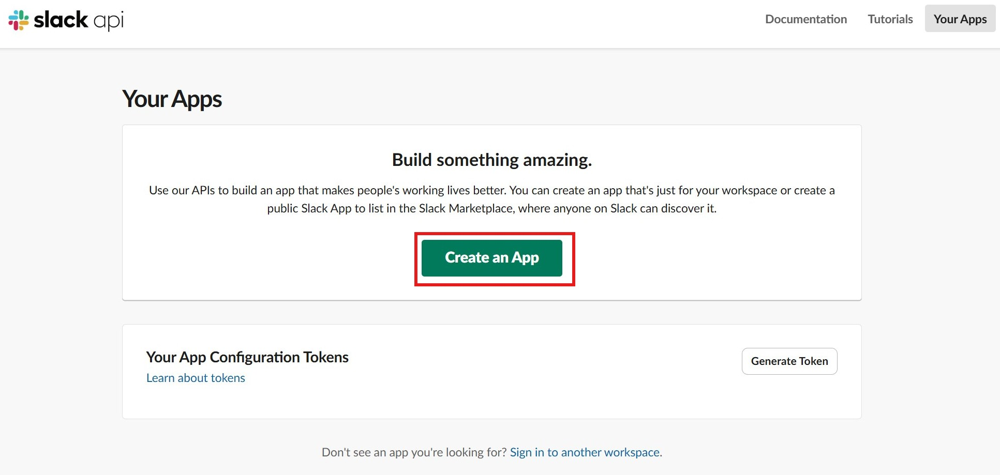
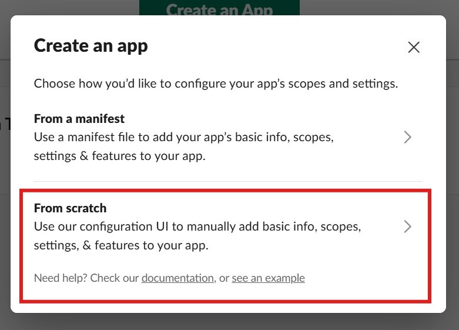
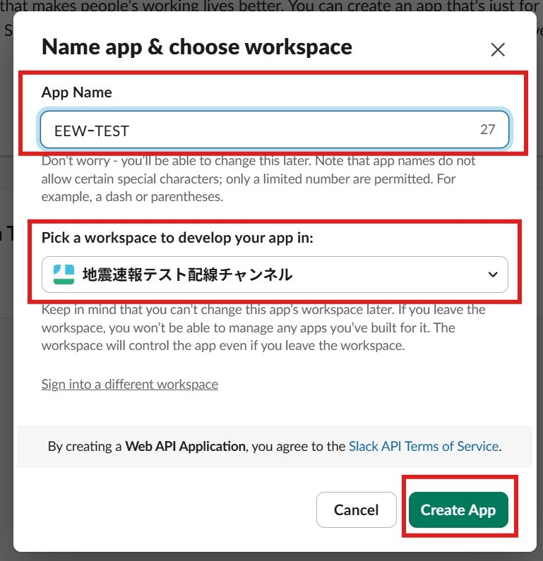
- 「Create an App」から「From scratch」を選択します。
- AppNameとWorkspaceを入力して「Create App」をクリックします。
② アプリ名の登録
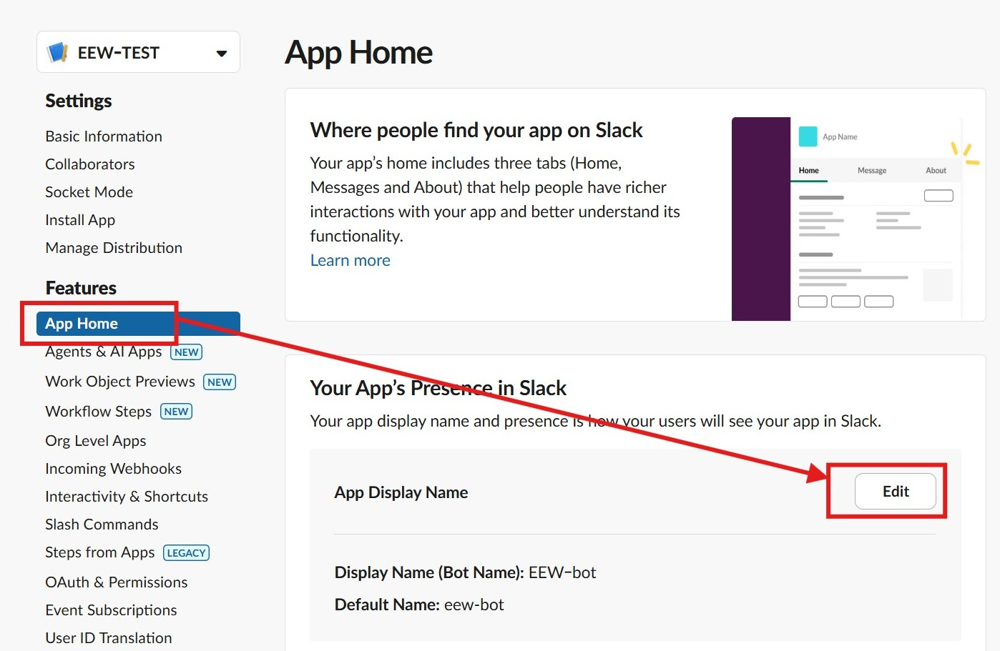
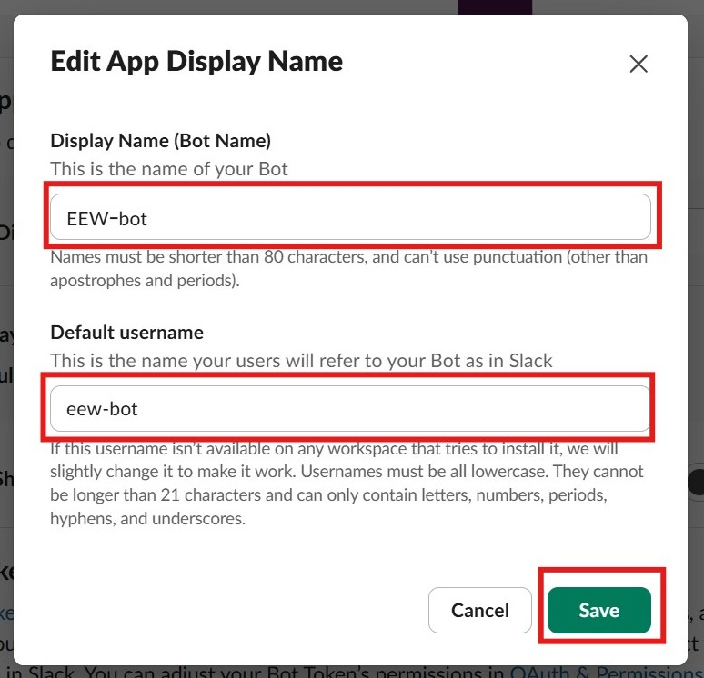
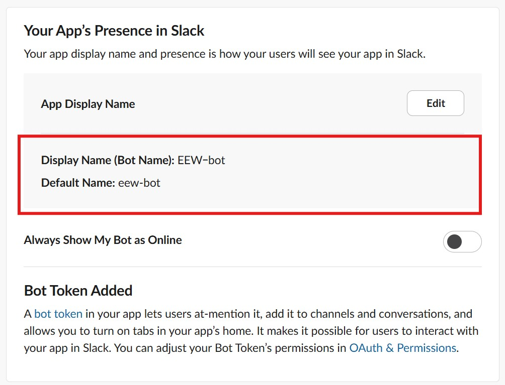
- 「App Home」メニューから「App Display Name」の「Edit」を選びます。
- Display NameとDefault usernameを設定して「Save」します。
③ Incoming Webhookの有効化
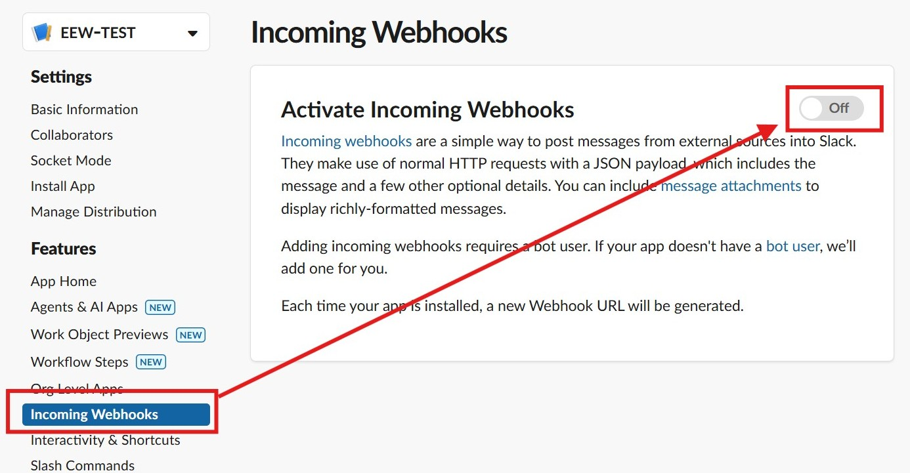
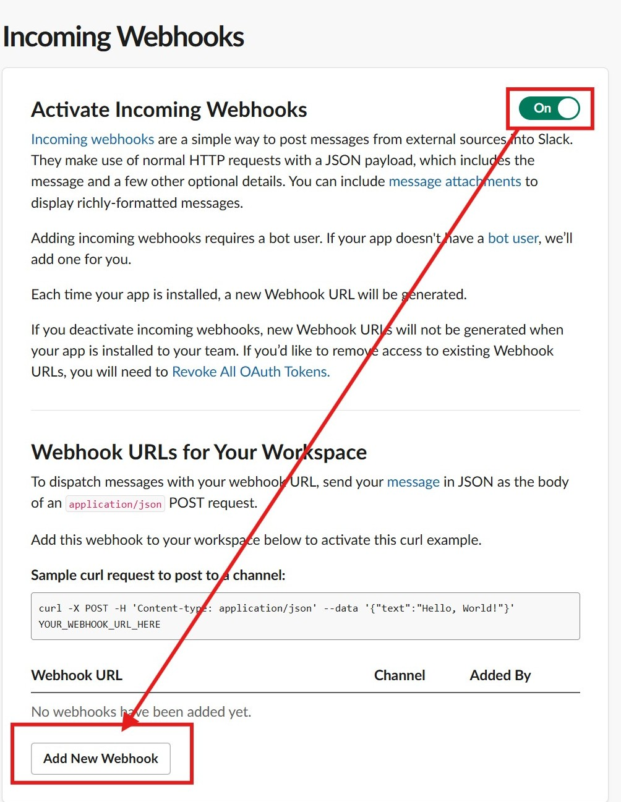
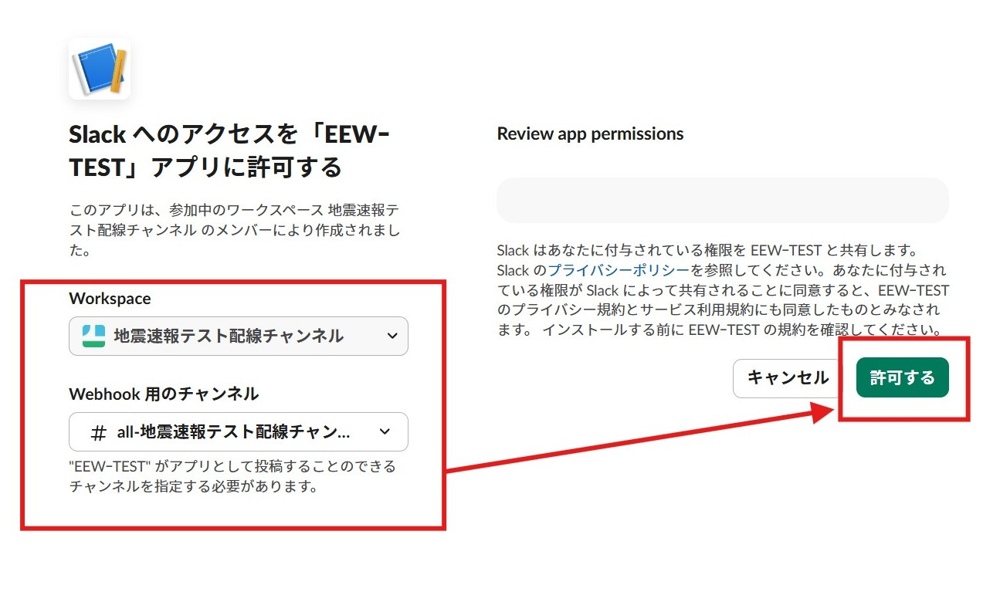
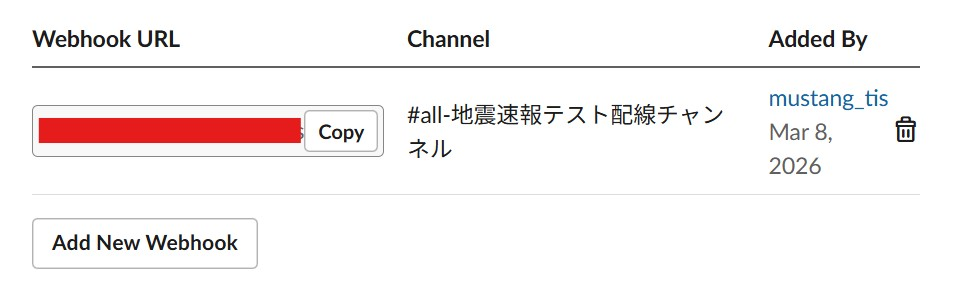
- 左メニューの「Incoming Webhook」を開き、「Activate」をONにします。
- ページ下部の「Add New Webhook to Workspace」をクリックします。
- 通知先チャンネルを選択して「許可」すれば、Webhook URLが発行されます。
SlackをDiscord設定に登録

総合ハブの
Discord連携設定 (➃の部分)を実行してください。Discord連携でSlackへ接続する
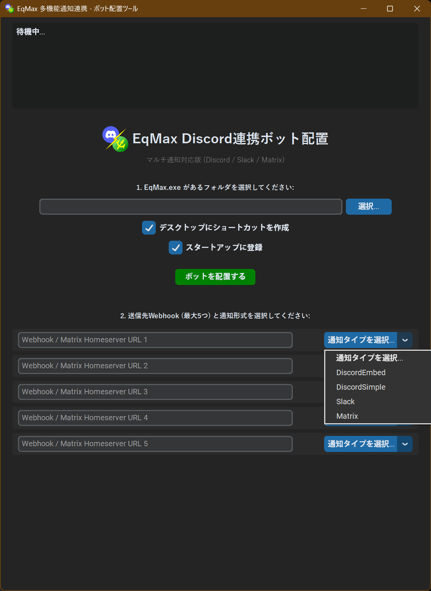
- EqMax.exeの選択: ファイルを選択します。
- 選択タイプからSlackを選ぶ: これによりSlack用設定が適応されます。
Discord連携登録
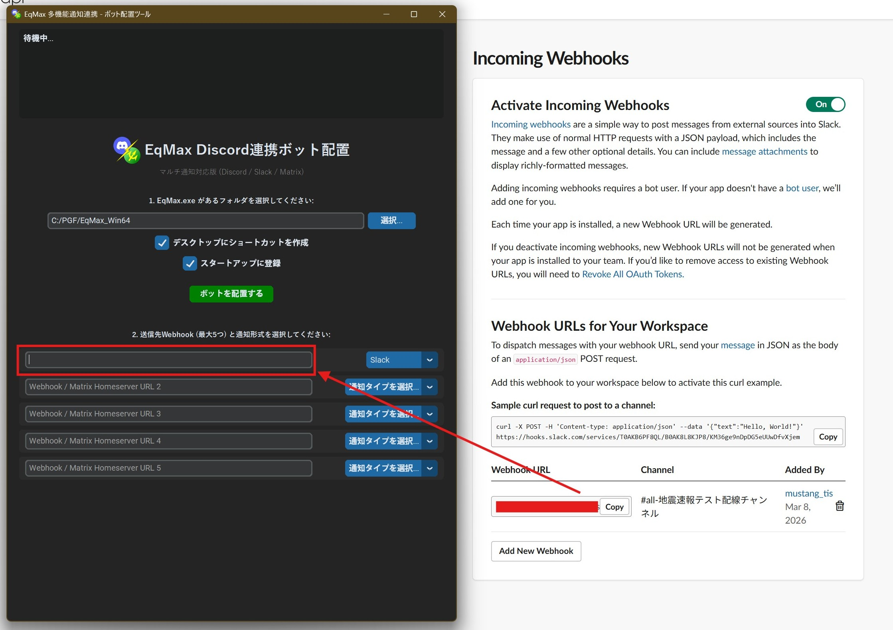
SlackのWebhook URLを貼りつけてbotを配置するを選ぶ
Discord連携を起動する
起動方法

Discord起動用ショートカットは二種類あります。
- 通常起動用ショートカット: 最小化起動し、スタートアップにも登録されます。
- セーフモード起動用: 起動しない場合のトラブルシューティング用です。一度正常に起動できれば、次回からは通常起動が可能です。
※初回はセキュリティ警告を許可する必要があります。
bot実行時プロンプトの見方
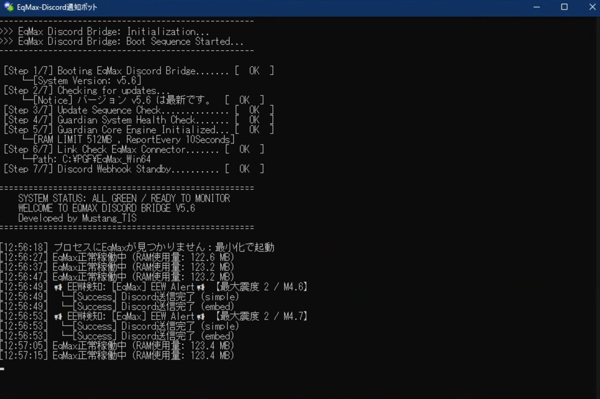
最小化中のウィンドウを展開すると表示されるログ画面の見方です。
- 赤枠（起動）: プロセスの状態を表示します。
- 黄枠（監視/Eq_Guardian）: フリーズ検知・自動再起動・メモリリーク監視(1GB制限)・定期生存報告を行います。
- 水枠（EEW連携）: 緊急地震速報の送信ログと、各連携先への成功結果を表示します。